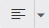
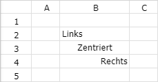
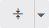
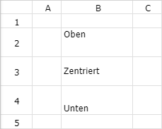
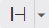
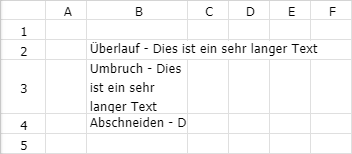
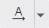
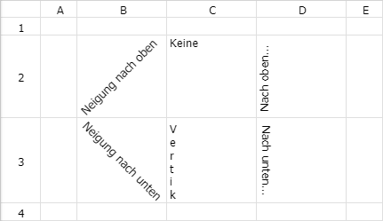

Über die folgenden Buttons können diverse weitere Formateinstellungen an Text und Zelle vorgenommen werden.
Buttons "Weitere Formateinstellungen"
Ø

Horizontale AusrichtungDer Button "Horizontale Ausrichtung" bestimmt die horizontale Ausrichtung des Zelleninhalts. Bei Anwahl des linken Button-Bereichs wird die zuletzt gewählte Ausrichtung auf die Zelle bzw. den markierten Bereich angewendet. Wird hingegen der rechte Bereich gewählt, so öffnet sich ein Dialog, in welchem die Art der Ausrichtung (Links; Zentriert, Rechts) definiert werden kann.
Beispiel

Ø

Vertikale AusrichtungDieser Button bestimmt die vertikale Ausrichtung des Zelleninhalts. Bei Anwahl des linken Button-Bereichs wird die zuletzt gewählte Ausrichtung auf die Zelle bzw. den markierten Bereich angewendet. Wird hingegen der rechte Bereich gewählt, so öffnet sich ein Dialog, in welchem die Art der Ausrichtung (Oben; Mitte; Unten) definiert werden kann.
Beispiel

Ø

TextumbruchMit Hilfe dieses Buttons kann die Art des Textumbruchs von Zelleninhalt bestimmt werden. Bei Anwahl des linken Button-Bereichs wird die zuletzt gewählte Ausrichtung auf die Zelle bzw. den markierten Bereich angewendet. Wird hingegen der rechte Bereich gewählt, so öffnet sich ein Dialog, in welchem die Art des Umbruchs (Überlauf; Umbruch; Abschneiden) definiert werden kann.
Beispiel

Ø

Text drehenÜber den Button "Text drehen" kann der Zelleninhalt gedreht werden. Wird der linke Bereich des Buttons angewählt, so wird die zuletzt gewählte Variante auf die Zelle bzw. den markierten Bereich angewendet. Wird hingegen der rechte Bereich gewählt, so öffnet sich ein Dialog, in welchem die Variante des Drehens (Keine; Neigung…; Vertikal; Nach oben / unten) gewählt werden kann.
Beispiel
